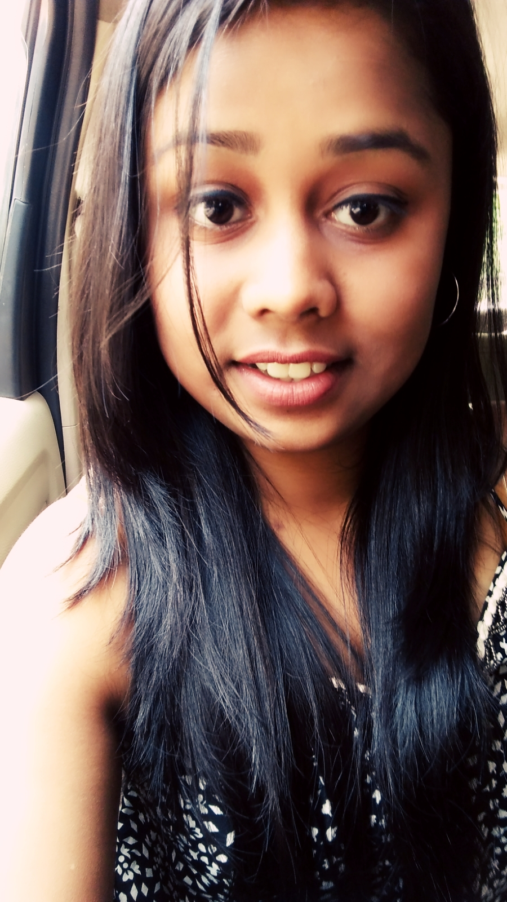

SHIVANI GUPTA
102/2 Moh.Murli Manohar,
Chhtrasal Road,Jalaun,
(U.P.)
Pincode-285123
Contact No.:9532163912
Email Id:shivanigupta10898@gmail.com
Career Objective:
As a technocrat I desire to succeed in an environment of growth and excellence and earn a job which provides me job satisfaction
and self-development and help me achieve personal as well as organization goals. As an IT Professional I want to work with a
company or institution that offers me a consistently positive atmosphere to learn new technologies and implement them for the
betterment of the business.
Professional/Technical Qualification:
Currently pursuing B-Tech from JSS Academy of Technical Education.
Educational Qualifications:
- B-Tech 1st year 92%.
- Passed Class 10th with 83% from ICSE Board in 2013 from Heliger Borden Education Center,Kanpur.
- Passed Class 12th with 83% from ISC Board in 2015 from Heliger Borden Education Center,Kanpur.
Technical know how:
I am working on Android App Development from almost 1 year. I have done many minor projects some of which are mentioned
here.I have a keen interest in learning new things and applying them. I prefer completing my work as soon as possible.
Technical Skills:
- I know the following programming languages:
- I know the following markup languages:
- I have worked on following application software:
- MS Word
- MS Powerpoint
- MS Excel
- Sublime Text
- Notepad++
- Visual Paradigm
- JFLAP
- I have worked on following projects:
- Obstacle avoiding bot on Arduino.
Achievements:
- Gold Medal for First and Second Semester results.
- Silver Medal for Second Rank in College in First Semester.
- Volunteer of Carrom Game in College Sports Meet(Mythri 2017).
- Appointed as Cultural Prefect in Class 12th.
Membership:
Active member of Origo Society,JSS Noida.
Personal details:
Extra Curriculum:
- Playing Badminton is one of my free time Job.